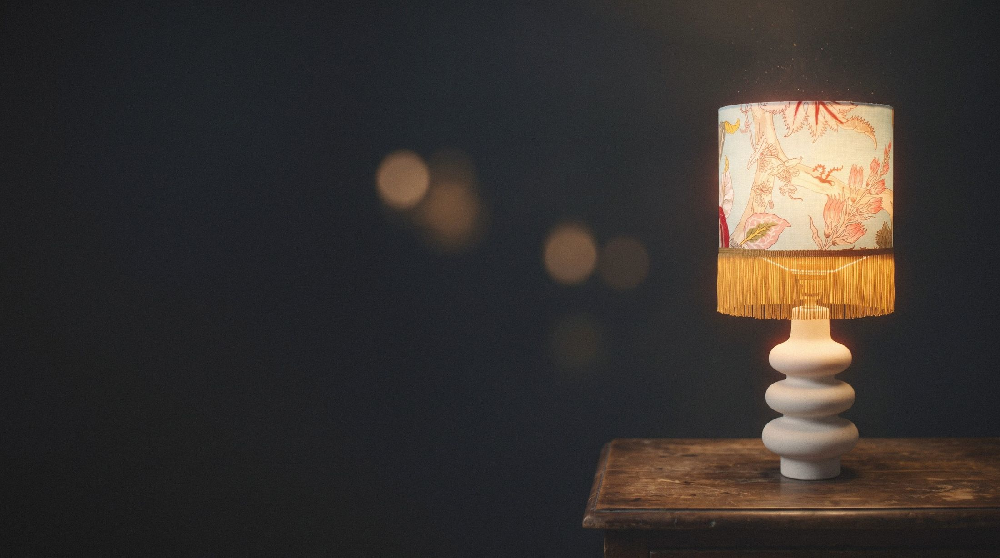

Raccommodeuse de merveilles
Dans l'atelier, rien n'est jamais vraiment abîmé : seulement en attente d'un tour. Texte provisoire.
Découvrir la boutiqueRaccommodées à la main


Sous la lampe
Là où l'objet reprend vie
Une seule lampe allumée suffit. Approche-toi des repères pour voir ce qui a été raccommodé. Texte provisoire.
Entrer dans la scèneChaque pièce garde son truc du tour
Voir les fiches
- 1
Le pied, gardé tel quel
Chiné, nettoyé, jamais effacé. Texte provisoire.
- 2
L'abat-jour, cousu main
Un tissu choisi pour la pièce, monté à la main. Texte provisoire.
- 3
Le truc du tour
La petite astuce qui remet la pièce en vie. Texte provisoire.

L'atelier
« Chinées avec amour, faites à la main. »
Un atelier caché derrière une porte discrète, où chaque pièce attend son tour. Texte provisoire.
Pousser la porteEntrer par la pièce


Des nouvelles de l'atelier
Les nouvelles pièces et leurs trucs du tour. Une lettre à la fois.